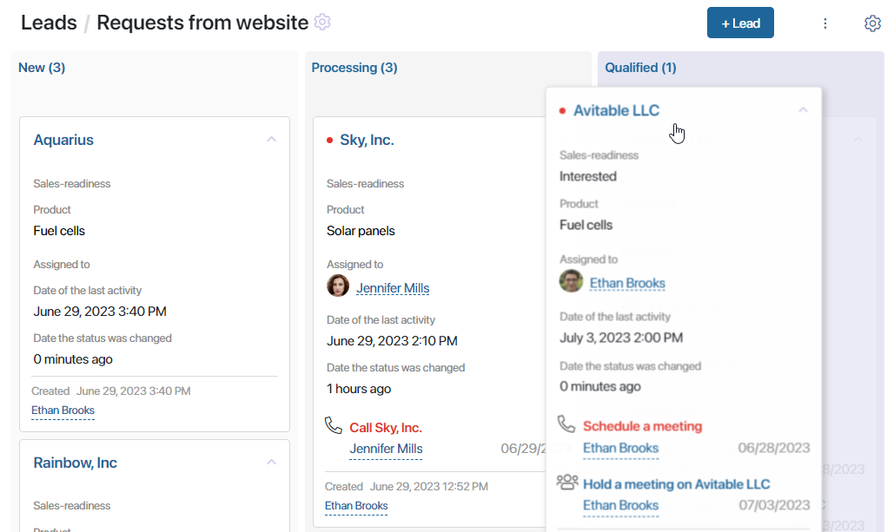
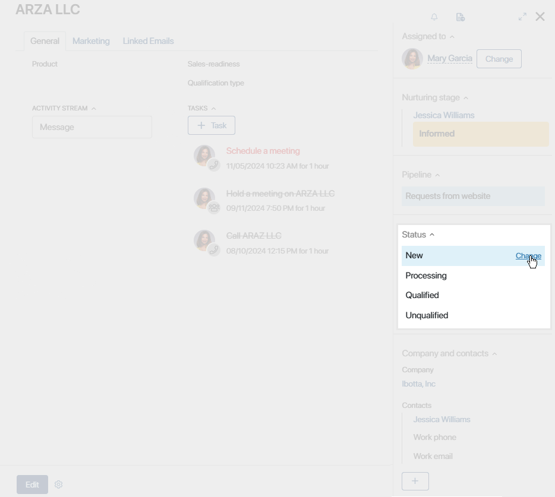
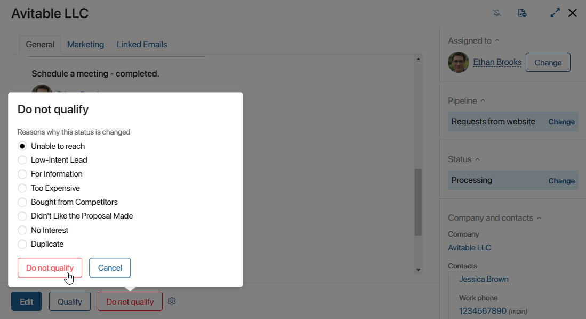
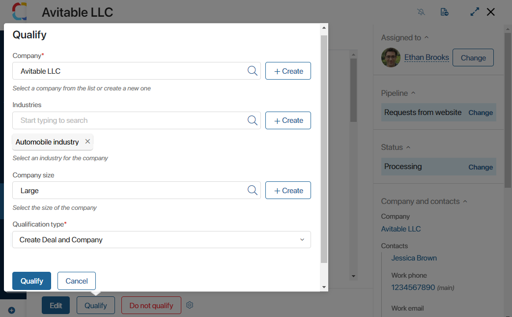
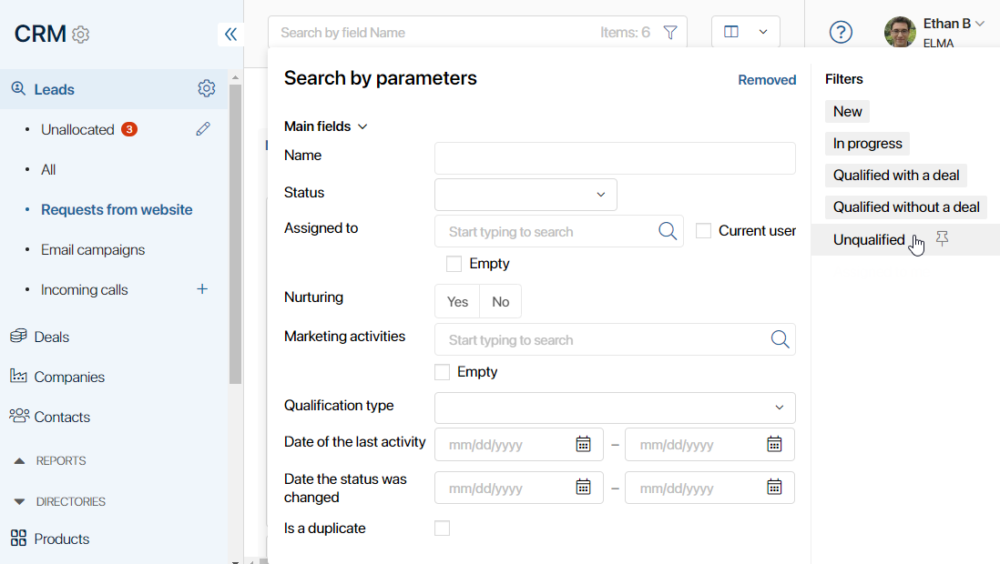

When a lead’s status changes, it moves from one stage of the pipeline to another. Statuses can be assigned manually or within business processes. This depends on a pipeline’s settings configured by the system administrator.
By default, the following statuses are available for leads:
- New. A newly added lead.
- Processing. Work with the lead is in progress, a sales rep is nurturing the deal.
- Qualified. Assign this status if the client shows a high interest in the product. You can create a new deal or a new company.
- Unqualified. Assign this status and specify the reason, for example, you could not reach the client or the client has lost interest. In this case, all CRM tasks associated with the lead are automatically finished.
The system administrator can also configure the visibility of statuses on the Kanban board. On the funnel page, you will only see those statuses to which you have been granted access.
The dates when a lead’s status changes are recorded. The lead’s activity stream shows when each status was assigned. On the Kanban board, you can see when each item was assigned the current status.
Change the status manually
If manual status change is allowed, users with the editing permissions can assign different statuses to leads. The system administrator can restrict moving leads to previous stages in the pipeline’s settings.
A lead’s status can be changed in one of the following ways:
- On the pipeline page, in the Kanban board view, drag the lead from one stage to another.


- If the lead’s status is Processing, click one of the buttons on its page:
- Qualify. This button starts the lead qualification business process. During the process, you can convert the lead into a deal or a company.
- Do not qualify. Click this button to finish working with the lead.
When you change the status to Unqualified using any of the methods, specify the reason why the lead was lost. The list of available reasons can be edited by the system administrator. Read more about it in the Lead pipelines article.

Automatic status change
If the Leads progress according to a business process option is selected in the pipeline’s settings, a lead moves from one stage to another automatically. This happens when users complete tasks assigned to them during a business process.
Mark a lead as qualified
When a potential client shows high interest in your product, you can convert the lead into a deal and continue working with it.
To do this, the lead qualification business process is used. The system administrator can modify the process according to your company's requirements.
To qualify a lead:
- Launch the lead qualification process. This can be done in several ways:
- On the lead page on the lower panel, click the Qualify button. A pop-up window will appear where you need to enter qualification data.
- On the lead page on the sidebar, change the lead’s status to Qualified. The responsible sales rep will be assigned a task to fill in the qualification data.
- On the pipeline page, move the lead to the Qualified column using the drag-and-drop method. The assigned rep will get a task to fill in the qualification data.
- In the pop-up window or on the task form, fill in the fields:

- Company*. Associate a company with the lead and the new deal. Choose an existing contractor by clicking the magnifying glass icon or click the + Create button to create a new one.
- Industries / Company size. Fill out these fields with entries from the CRM directories Industries and Company sizes. Select from existing items by clicking the magnifying glass icon in the field, or add a new entry by clicking +Create.
- Qualification type*. Select one of the available options from the drop-down list:
- Create Deal and Company. If this option is selected, you also need to specify the pipeline to which the new deal will be added.
- Create Only Company. Select this option if the deal is postponed. You can add the deal later directly from the lead’s or company’s page. by clicking the
 button on the side panel next to the Deal field.
button on the side panel next to the Deal field.
- When you finish filling out the form, click Qualify.
When a lead is qualified, it is no longer possible to change its status. Work with it continues as part of the deal that has been created.
How to view leads in final statuses
The Qualified and Unqualified statuses are final.
By default, qualified leads can be viewed on the pipeline page and unqualified leads are hidden from it.
You can view leads with final statuses by using pre-configured filters. To do that, open the pipeline you need. In the search bar at the top of the page, click the  icon.
icon.
On the right side of the window that opens select a filter.

You can use a combination of filters to refine your search. Read more in the article Search and filters. Additionally, the system administrator can configure the constant display of leads with final statuses in the pipeline settings.
How to continue working with a lead in a final status
By default, if you have moved a lead to one of the final statuses, changing the status becomes impossible. If you still need to start working with the lead again, use the Change Status button. It can be added to the lead card by the system administrator.
Read more about adding buttons in the Manage buttons on app item pages article.
Found a typo? Select it and press Ctrl+Enter to send us feedback